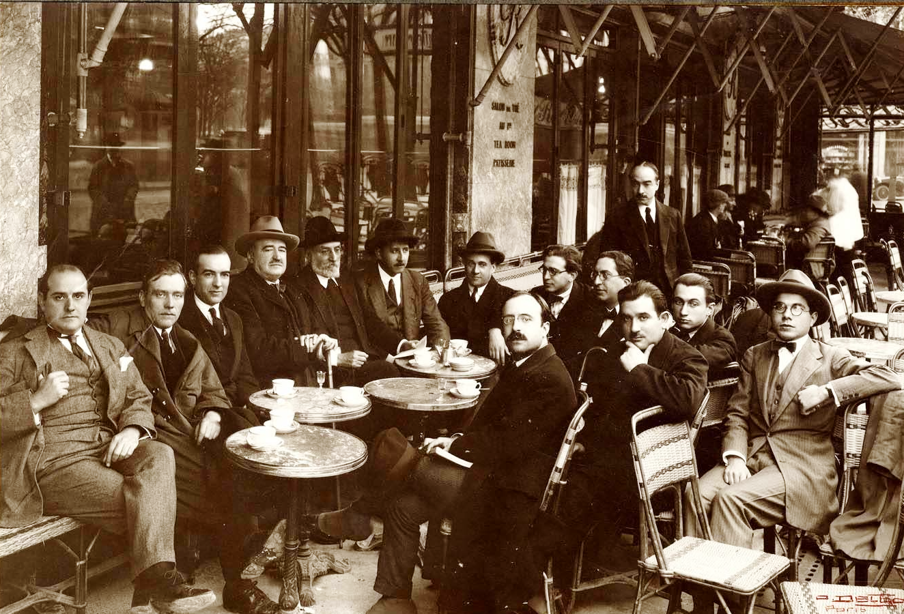

Cafetería Las Horas
Necesitas un descanso, Tienes ganas de un buen café, entra en nuestra cafetería. Desconecta y disfruta de bocados preparados con ingredientes selectos por nuestros profesionales.
Grupo Las horas somos una empresa líder en el sector de la restaruación premium con cafeterías y restaruantes ituados en los enclaves más emblemáticos de las ciudades de madrid, Valencia, Barcelona y Sevilla. Nuestros locales, ubicados siempre en enclaves privilegiados, se caracterizan por una arquitectura y decoración únicas, así como por una cuidada presentación de su comida, siemrpe de mámica calidad. Somos música, arte y cultura, pero sobre todo, somos un grupo de personas trabajando para hacer sentir experiencias únicas a nuestros clientes.
 Cafería Las Horas 1940